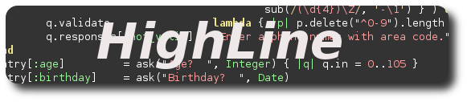

| HighLine:
Line
oriented interfaces the Ruby way |
|

HighLine is designed specifically to expell the annoyance that is the creation of text based applications. The developers believe that line oriented applications still play a very real role in the software world, and that there is no reason why languages shouldn't reflect this. Through a high level line oriented library, the creation of robust text based applications is not only possible, it's fun! With a few simple requests to the HighLine library, you'll be up and running in no time, putting your efforts into the real problem at hand. If you thought Ruby couldn't get any better, take the time to download HighLine now and you might be pleasantly surprised!
Getting HighLine HighLine is packaged using the RubyGems software and can be installed by simply typing gem install highline at the command prompt. On OS X, Linux or most Unix systems, you will most likely need administrator rights to do this. You can also download the source for the latest release from RubyForge. If you are in dire need of the bleeding edge features or simply like playing with fire, you can also access the source via anonymous CVS. Using HighLine If you installed HighLine via RubyGems, the documentation should have been generated automatically. All source files are documented in rdoc, so making use of HighLine should be easy. If you don't feel like generating it, feel free to use our online documentation. There is also some example code included in the package that demonstrates how to use the library. If you are still stuck, feel free to contact us with any questions you might have. Contributing to HighLine We're
as lazy as any other open source project and would love for you to do
some of our work for us.
If you are interested in contributing code, testing the software, or just offering suggestions we'll appreciate the support. If you want to write patches, grab the latest CVS, check the TODO file and feel free to try implementing any of the features you see listed. You might want to check in with us before you start writing, just to make sure that we haven't already starting working on what you'd like to add. Once you're done, run cvs diff and then send the code off to James. We love unit tests, so if you write some which show that your code does what it's supposed to, we'll be happy. Also, make sure that you check to make sure you haven't caused any our currently passing tests to fail BEFORE submitting a patch. It's as easy as running rake and will save a lot of headaches in the end. (Of course, you will need Rake to do this, available via RubyGems) If you've found a bug but don't know how to fix it or don't want to send code, feel free to let us know anyway. There is usually a discussion after every public release on the Ruby-talk mailing list, so this also might be a good way to share your two cents and get up to speed on whats going on inside the project. You can also head over to the smtose.org wiki and post comments or questions on the discussion page as well as see news updates and other good things. About the Developers James Edward Gray II is the creator of HighLine and also the founder / administrator of rubyquiz.com. When he's not tinkering with ruby for free, he gets paid to run Gray Productions which does everything from web design to complex business applications. Gregory Brown is the founder of smtose.org and a computer science major at the University of New Haven. When he's not pushing his beliefs in the Free Software Movement, he spends time coding for school, friends, the New Haven Dental Group, and anyone else who will shake money at him. James and Greg will be developing the RubyCentral grant winning Gambit library via a codefest from May 28th - June 7th in Edmond, Oklahoma. |